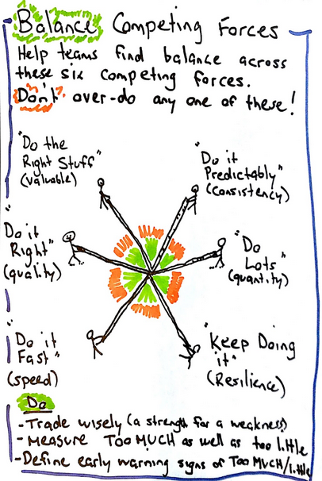

“How do I know if my team is performing well?” This is a question that every manager, and every team member, should ask themselves. A better question could be, “How do I measure my team’s performance?” or even better, “What is team performance?”
Answering these questions is not as simple as it seems. Team performance is a large domain with many models, metrics, frameworks, and books available on the topic. I found Troy Magennis’ model of 6 competing forces to be a great starting point for examining team performance. These 6 competing forces are:
- Value - Do the right thing.
- Consistency - Do it predictably.
- Quality - Do it right.
- Speed - Do it fast.
- Resilience - Keep doing it.
- Quantity - Do lots.
Troy provides a simple recommendation: “Help teams find balance across these six competing forces. Don’t over-do any one of these!” Finding balance does not mean a team should be average on all of these forces, but rather to consider the trade-offs of being stronger or weaker in certain areas.
Performance often comes with metrics, and this model encourages teams to define how they want to measure these forces, based on what makes sense for them. However, when thinking about metrics, it is a good practice to define both what is too much as well as too little. For example, if a team were to look at the Quality metric by tracking the number of bugs, the team should have an idea of what is too many bugs as well as what is not enough bugs.
As you can see, these 6 competing forces offer a great conversation-starting point to help a team understand and define what it means to perform well for them.
